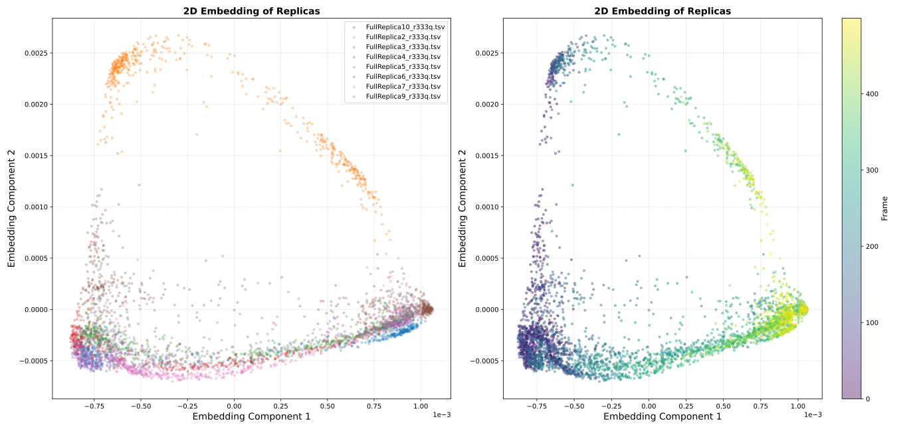
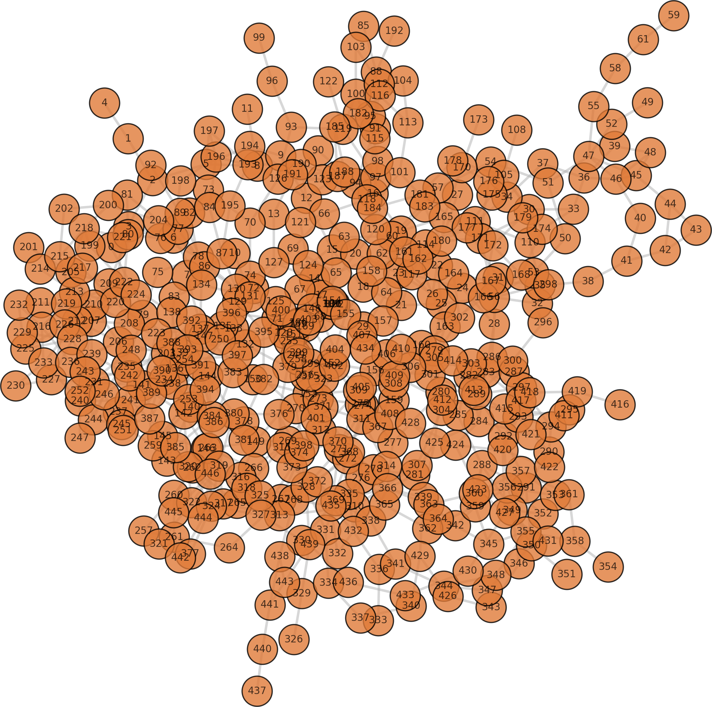
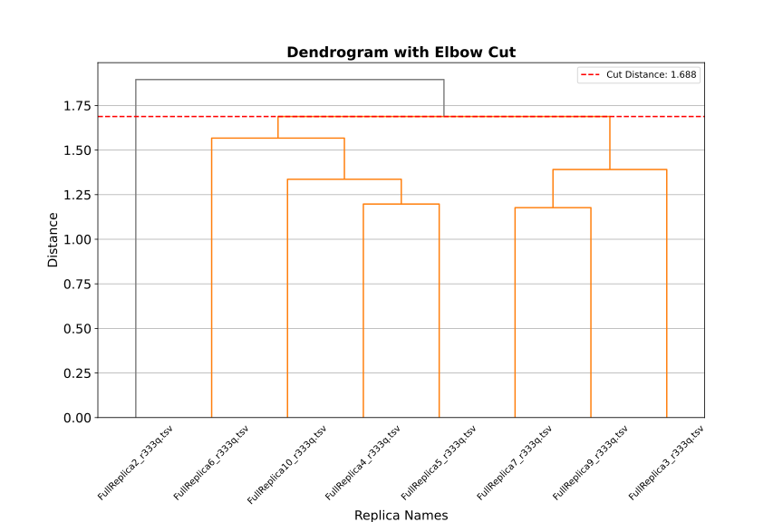

We present a practical example to demonstrates NetMD’s workflow, from start to finish, using a real-world dataset.
The study involves the conformational transition of the GLUT1 protein from the outward-open to the inward-open state a process closely linked to the glucose transport pathway. Here, we characterized the conformational transition of the R333Q (“Arg333Gln”) mutant GLUT1,
starting from outward-open conformations with glucose bound in its pocket, obtained through multiple Supervised Molecular Dynamics (SuMD [1]) simulations.
Using a Targeted Molecular Dynamics (TMD) approach, we then gradually guided the glucose toward the cytoplasmic side.
To ensure an accurate representation of these major conformational changes, we performed simulations with eight independent replicas.
All the files related to this example are located in the example directory of the NetMD repository.
First the residue-residue contacts need to be extracted from the raw MD data of each replica. In this example we already have the residue-residue contacts extracted from the MD trajectories with GetContacts by using the following command line:
Launch NetMD by providing the required input files. You can either list files directly on the command line or specify a directory and prefix for recursive exploration.
NetMD will iterate over the list of files and generate the embeddings for each one using the set parameters. The config_g2v.yml file contains the arguments for Graph2VeC:
NetMD will recursivly explore the directory tree starting from R333Q and generate the embeddings for each file with the prefix FullReplica. The config_g2v.yml file contains the arguments for Graph2Vec:
Note
The -I option will only work if the input files are in the same directory. If you have files in different directories, you can use the -F option to specify them.
To learn more about the available command line options:
In this section, we will provide a brief overview of the most important files generated by NetMD.
Embeddings for each MD replica frame.

From the first plot, we can see the embeddings of each frame of the eight replicas projected on two dimesion. The model is able to reconstruct distinct trajectories with the correct temporal order. From the shape of the plot it can be observed the the effect of the TMD approach, which guides the conformation of the system to a desired and shared state.
The replicas mainly differ in the inter states between outward-open and inward-open. To find a common consensus of the replicas, we can use the barycenter of the embeddings.
The second plot shows the barycenter of the embeddings, which minimizes the sum of squared distances to the time series of the eight replicas.
The filtered graph representation used to generate the embeddings.

To facilitate further analysis and enable users to explore the data beyond the generated embeddings,
we also provide access to the underlying graph structures themselves.
These saved graphs have already been processed using the entropy filter.
Each node is annotated with its corresponding residue number, linking it directly back to the protein’s primary sequence.
The dynamic time warping (DTW) mapping between the frames and the barycenter.
This output illustrates the synchronization of the potentially time-shifted or rate-varying trajectories by aligning each one to a common reference timeline,
known as a barycenter, which represents an average or consensus trajectory. The alignment itself is achieved using the robust Dynamic Time Warping (DTW) [2] algorithm.
The table contains the mapping detailing which frame in the replica corresponds to which frame in the calculated barycenter, along with the calculated DTW distance.
This allows for a comprehensive understanding of the alignment process and the degree of similarity between the trajectories and the barycenter.
<FullReplica2_r333q.tsv>
0
1
2
3
4
5
6
7
8
9
10
11
12
13
14
15
16
17
18
19
20
21
22
23
24
25
26
27
28
29
30
31
32
33
34
35
36
37
38
39
40
41
42
43
44
45
46
47
48
49
50
51
52
53
54
55
56
57
58
59
60
61
62
63
64
65
66
67
68
69
70
71
72
73
74
75
76
77
78
79
80
81
82
83
84
85
86
87
88
89
90
91
92
93
94
95
96
97
98
99
100
101
102
103
104
105
106
107
108
109
110
111
112
113
114
115
116
117
118
119
120
121
122
123
124
125
126
127
128
129
130
131
132
133
134
135
136
137
138
139
140
141
142
143
144
145
146
147
148
149
150
151
152
153
154
155
156
157
158
159
160
161
162
163
164
165
166
167
168
169
170
171
172
173
174
175
176
177
178
179
180
181
182
183
184
185
186
187
188
189
190
191
192
193
194
195
196
197
198
199
200
201
202
203
204
205
206
207
208
209
210
211
212
213
214
215
216
217
218
219
220
221
222
223
224
225
226
227
228
229
230
231
232
233
234
235
236
237
238
239
240
241
242
243
244
245
246
247
248
249
250
251
252
253
254
255
256
257
258
259
260
261
262
263
264
265
266
267
268
269
270
271
272
273
274
275
276
277
278
279
280
281
282
283
284
285
286
287
288
289
290
291
292
293
294
295
296
297
298
299
300
301
302
303
304
305
306
307
308
309
310
311
312
313
314
315
316
317
318
319
320
321
322
323
324
325
326
327
328
329
330
331
332
333
334
335
336
337
338
339
340
341
342
343
344
345
346
347
348
349
350
351
352
353
354
355
356
357
357
358
359
360
361
362
363
364
365
366
367
368
369
370
371
372
373
374
375
376
377
378
379
380
381
382
383
384
385
386
387
388
389
390
391
392
393
394
395
396
397
398
399
400
401
402
403
404
405
406
407
408
409
410
411
412
413
414
415
416
417
418
419
420
421
422
423
424
425
426
427
428
429
430
431
432
433
434
435
436
437
438
439
440
441
442
443
444
445
446
447
448
449
450
451
452
453
454
455
456
457
458
459
460
461
462
463
464
465
466
467
468
469
470
471
472
473
474
475
476
477
478
479
480
481
482
483
484
485
486
487
488
489
490
491
492
493
494
495
496
497
498
499
<barycenter>
0
1
2
3
4
5
6
7
8
9
10
11
12
13
14
15
16
17
18
19
20
21
22
23
24
25
26
27
28
29
30
31
32
33
34
35
36
37
38
39
40
41
42
43
44
45
46
47
48
49
50
51
52
53
54
55
56
57
58
59
60
61
62
63
64
65
66
67
68
69
70
71
72
73
74
75
76
77
78
79
80
81
82
83
84
85
86
87
88
89
90
91
92
93
94
95
96
97
98
99
100
101
102
103
104
105
106
107
108
109
110
111
112
113
114
115
116
117
118
119
120
121
122
123
124
125
126
127
128
129
130
131
132
133
134
135
136
137
138
139
140
141
142
143
144
145
146
147
148
149
150
151
152
153
154
155
156
157
158
159
160
161
162
163
164
165
166
167
168
169
170
171
172
173
174
175
176
177
178
179
180
181
182
183
184
185
186
187
188
189
190
191
192
193
194
195
196
197
198
199
200
201
202
203
204
205
206
207
208
209
210
211
212
213
214
215
216
217
218
219
220
221
222
223
224
225
226
227
228
229
230
231
232
233
234
235
236
237
238
239
240
241
242
243
244
245
246
247
248
249
250
251
252
253
254
255
256
257
258
259
260
261
262
263
264
265
266
267
268
269
270
271
272
273
274
275
276
277
278
279
280
281
282
283
284
285
286
287
288
289
290
291
292
293
294
295
296
297
298
299
300
301
302
303
304
305
306
307
308
309
310
311
312
313
314
315
316
317
318
319
320
321
322
323
324
325
326
327
328
329
330
331
332
333
334
335
336
337
338
339
340
341
342
343
344
345
346
347
348
349
350
351
352
353
354
355
356
357
358
359
360
360
361
362
363
364
365
366
367
368
369
370
371
372
373
374
375
376
377
378
379
380
381
382
383
384
385
386
387
388
389
390
391
392
393
394
395
396
397
398
399
400
401
402
403
404
405
406
407
408
409
410
411
412
413
414
415
416
417
418
419
420
421
422
423
424
425
426
427
428
429
430
431
432
433
434
435
436
437
438
439
440
441
442
443
444
445
446
447
448
449
450
451
452
453
454
455
456
457
458
459
460
461
462
463
464
465
466
467
468
469
470
471
472
473
474
475
476
477
478
479
480
481
482
483
484
485
486
487
488
489
490
491
492
493
494
495
496
497
498
499
<score>
0.9552418949870151
0.7056661364711659
1.0405166074236338
1.1103355732502818
0.999316967507964
1.152765494228907
0.9950657540118084
0.9864373231526871
0.6597906067064832
1.0866071305749632
1.2834324215631776
1.0679416369024595
0.9988338645147402
0.8798720877540708
0.7727181248919861
0.9681168362171071
0.9235623052426903
0.9441237515175496
0.7303320415785013
1.1485883699342072
0.7224060582374318
0.923985101591425
0.8299610178430465
0.9779619117747534
0.8501586971999537
0.9358792935691772
1.1219734192343451
1.058837366279258
0.9568631576314547
0.9972336685338964
1.1579223845904285
1.296454261001924
1.012354187540849
1.0491462046861473
0.9114328614576067
0.9030529708696786
0.9960154424164906
0.6886467114665259
0.9941404466373173
0.723563128373342
1.004733066230999
0.9103943538192742
0.9439863000278155
0.943004411837038
0.8990881764627008
1.076600638423869
1.1845736657927812
1.2313508589180095
0.9384855373590083
0.8040155135225092
0.7065687257856562
0.5914965464435323
1.0615649439534312
0.9659994812498086
0.9600742860229925
0.7248816286605031
1.0839022431024512
0.9303555227562722
0.9850689949966652
0.7528632972574044
1.1065326337800385
0.5835338335625908
0.9432788228276621
0.8195552795399178
1.0080085371892527
0.7073343459962251
1.015169200908876
0.9567431827394028
1.0168164214807573
0.8553490907499207
0.9661962948380132
0.9013086862794439
0.9978949329067855
0.9877341695131245
1.01095296177873
0.741803576873521
0.9089097948114733
0.839510186957209
1.0029519269042662
1.0162240591194702
1.2777956466623546
0.9496037798776863
0.7263091600699857
1.1209704932690563
1.149229173080566
0.8599728229130773
0.9313856162600072
0.917565536035342
1.0912348042000002
0.962152153406639
1.2807604776691448
1.0758027950437188
1.1142882618919092
0.8903252709320956
0.7836312763315567
0.8846021436295325
0.9462656124959407
0.8460931678273204
1.1033186017998244
0.7309161531930822
1.0534524691971479
0.9514277402782155
0.7849936268711737
0.9095816318914675
0.764195938301092
1.1331600152871129
0.656139255741623
1.0701161968626542
1.0791849847687998
0.7982814709011181
0.8712553916258382
0.5729600701961672
1.0143283414782507
0.7754173933284785
0.6749208098428713
0.9283096711681847
0.7589957707820612
0.5784716191250493
0.8358414771456139
0.8029508106009203
0.845545424797329
0.8210906874061782
0.8662576224487255
1.0161728088873365
0.9773556174692274
0.8345959049273624
1.0731704148647314
0.6881690064467768
0.7675804101779053
0.960126468093403
0.9215936403394673
1.1251970060045073
1.025769196316695
1.2745210675796241
0.9397835438759394
0.8887933014107328
1.040962935275354
0.8914328477116558
1.0026059997819747
1.0052644201061136
0.8988527059855188
0.9819791102647805
0.8885782345780455
0.7854090687866138
0.7674419787927683
1.0503148871639616
1.0957843612481668
0.7945843913993061
0.6611707527264944
0.8169874989451714
0.9005365881477874
0.7817042567417666
0.9453907545921174
1.1611477053462789
0.5570682373172892
1.0379380055014207
0.7317647031558209
1.2687828385669058
1.087528555686582
0.9429197264950198
1.0710459305823072
0.951964739917833
0.9809766222756883
0.8571762481242221
0.9630524641548636
1.0668223584895486
0.7911781355993766
0.8770523073866523
0.850408942931492
0.6422660267146979
0.7505173438435523
0.713131238204601
0.6590818129944408
0.9266766406315041
1.0814639822501078
0.9859962437781558
1.0393197127332934
0.9519522445681429
0.9790067642081897
0.9348738389586809
0.655504770091579
0.9302867858741943
1.140708362524117
0.7289505769747319
0.8150791208993131
0.7235056795176257
1.0420233429123198
0.49036354370498586
0.8049296851976174
0.6890888102283732
1.0097201743153716
0.7461774661310419
0.8814613951308904
0.6988567768963336
1.1077554825298972
0.5574792398971118
0.843227649002732
0.552600142498697
0.8824332443070345
0.7484390893167515
1.0594192715918245
0.783914500286382
0.918591158813978
0.8842258782852245
0.6979950950359771
0.933008254929914
1.0834582734549045
0.7855794514579927
0.9462669321103157
1.1839268015008588
0.6575184063915133
0.9831242130724198
0.8303486747642949
1.0905779484789082
1.1336240110404554
1.0104677866360685
0.9639759354539922
0.9713362559574813
0.901781404989425
1.2094432603282288
0.9839190892345167
0.797232255882393
0.7810899036680014
1.0144271504581532
1.0558172543752942
1.0830151882165215
0.9571567842869474
0.8787420127823802
0.9669428091540795
0.86998313283677
0.8109208744292711
1.0191310809327734
0.7856573493917842
1.0321654025757123
0.7275478239521793
0.8664685835615882
0.944319720265995
1.2145373436905411
0.8567402814540485
0.7416157541751384
0.8394612066885341
0.5454949556922714
0.7584370549217163
1.0727125412557366
0.612094787222086
0.7315884379015843
0.7976420238606508
1.0913381629858832
0.728184162081649
1.0426935111558038
1.096215130433442
0.7771533201193128
0.9401209045997821
0.8421693547787313
0.8309802055861001
0.7902697966937796
1.0289853613532587
0.5900324844220403
0.7251410579969455
0.9698118845859331
0.9187364475942938
0.9414198732199672
0.8111795542135574
1.0153289100050764
0.6932810642375881
0.9152564460455491
0.8594800831726773
0.9315592474031954
0.8226025005543225
0.9780051065497368
0.9909943884801169
0.7735647470105442
1.0748902692046265
0.7571562113415051
0.8932065061542642
1.1060634049915563
0.9045755466246536
0.9441037420746831
1.0523039375473315
1.0596063498572186
0.9592745670956258
1.1083693903793588
0.7251475438087781
0.7178429230797678
0.7784633612893759
0.6867462401814476
0.9153992628354016
0.7203674862660395
0.625523045265373
0.9312672166246587
1.0249880127813038
0.9373737891027585
1.0957392871758591
1.0460421575823708
0.6724758548971954
0.6637289284208787
0.8779847717957343
0.7015545863551421
0.8950928469997698
0.6987184444019774
0.7464318402478195
0.9958397394791549
0.8135247741365422
1.1465340050696173
0.9413316701884457
1.0893211397511096
0.7488399023352568
0.9968882611680511
0.8350722377382982
0.8568497007397087
1.0288514866953968
0.8415723278945635
0.7122685708816929
1.1139843453106768
1.0044495988935618
0.946661816635542
0.9395839699437675
0.8343149732162273
0.9898251386253312
0.7879714448686648
0.8069330035387648
0.4373919812588539
1.1254176804647307
1.31790582351103
0.9844153952517566
0.7847580023293792
0.7794259082095584
0.7842714842504446
0.7838045995797256
1.2109429593164585
1.2012101017818428
1.0945080222947814
0.8127102143327122
0.9692528640677097
1.2800880655865503
0.8796650518299669
0.983086188871037
0.9173146051220741
1.1820010224266104
1.0254371194521243
0.9625504937927184
1.0646248409285815
1.081727085775708
0.7932419174891465
1.0159090413099108
0.9302875435710652
0.9173218845477434
1.2770812379997416
0.9587274264444742
0.7629731351699496
0.9889761534933312
0.7415461193522684
1.1257461166668463
1.0830281282738843
1.1504331294148966
1.0867260489804917
0.9625834005048696
0.7198773700158446
0.6855995105415189
1.1251395723666853
0.8440213532605377
0.7684691748496674
0.6066742470728901
0.8641113341866201
1.2549418194780533
0.884735380112067
1.0820065955076024
1.1020978420486434
0.6791391656707295
1.074638885704044
0.8813744619172293
1.1058897208746752
0.9888464693227257
1.1524691463303554
0.8826688770393608
0.8793590627888108
0.6294423650125571
1.0822843582056434
0.6798799991167074
0.8754012806529925
0.7594812865192523
0.9360342037159621
0.8614195633954081
0.8665194324949542
1.0410038593071365
0.9176589030843568
0.7306437217690146
0.9842131376335531
1.0244842773234644
0.8177304995774748
0.7842942059033661
0.9198693436826325
0.8613500419904893
1.0135748075500297
1.131822934255715
1.0184140927484975
0.8347363063269709
0.9016404012070242
0.7150994650606292
0.9627687134733998
1.0574167384888813
0.7749923035376888
0.9767927559120902
1.1130566237275854
0.8746272123264935
0.8005615085441972
0.7788127824967912
0.7811790594888116
1.3504849431751547
1.102383722573668
0.8323961168046206
1.0763370131145589
0.8366359705567735
1.1209421179556804
1.0746006939699941
0.8624880410218753
0.607366109353785
1.276097523280773
0.801219743588403
0.9224274754222619
0.7481469163339742
1.0492709286302795
0.7874973812911452
0.7587540947537286
0.978456559803549
1.0655592462766414
0.8563863234371376
0.8147893309445722
0.9416082635530898
0.6930175738996631
0.94174565823688
0.967814221176326
0.6763467290680909
0.8270588102456682
0.9166459961044414
1.2366335618635635
0.6993681554722265
0.8719004125205395
0.7230856976929284
0.8182180621571186
0.6705994892590865
0.816195322215378
1.0587647974139744
0.9024087627406416
1.108014179592605
1.0513758009437029
1.0258619416255115
0.8661456566683301
0.6691147164711685
0.7971175103812634
0.6972512050176783
1.394144158908117
0.8087665680680254
0.978408680368935
1.0091495483232147
0.6501155910390297
0.8682278607035304
0.9480769860043673
1.244211817952321
0.8124153070923522
1.0446899093875963
0.7152017196046978
0.759442393341725
0.9001946321655565
0.9595590577603301
0.6240698174325028
1.0153106801829106
0.9121823957300207
0.9050807606821821
0.937001630104615
1.032124694304321
1.1185059477299246
1.2229473006240612
0.9152308632363492
1.1432038719104187
0.9421222389972256
0.6546256004533951
1.1300599144672172
0.7709890830962984
1.1440475885057158
1.0170234743151378
0.8982709481534079
0.8143343387203429
0.6916648313350658
0.8410722068542067
0.881273440106534
0.6836157349306331
1.029763744232367
1.0596022175377349
0.9959328400251626
0.9520244793457986
0.8140390821727681
1.3497882526888692
1.1472697567801893
0.8097335173060682
0.7602023014862238
1.152321538100992
0.6747737307521572
0.8382974217456026
0.9689902479815178
1.2085461367605936
The iterative pruning results of all replicas based on their distance from the barycenter.
The iterative pruning method is a technique used to rank replicas based on their distance from a barycenter.
In each iteration, the DTW distance between the barycenter and each replica is calculated.
The replica farthest from the barycenter is then removed, and the barycenter is recalculated.
Replicas are ranked based on the iteration at which they were removed, with the first-ranked replica being the closest to the barycenter and the last-ranked being the farthest.
This process helps to identify the replicas in the ensemble closest to the common consensus.
This ranking is shown in the table below
Replica Name
Rank
Barycenter Distance
FullReplica9_r333q.tsv
0.0
0.614938
FullReplica7_r333q.tsv
1.0
0.614938
FullReplica3_r333q.tsv
2.0
0.823672
FullReplica5_r333q.tsv
3.0
0.890971
FullReplica4_r333q.tsv
4.0
0.927845
FullReplica10_r333q.tsv
5.0
0.986553
FullReplica6_r333q.tsv
6.0
1.016571
FullReplica2_r333q.tsv
7.0
1.261702
The clustering analysis of the replicas.
Finally, to explore the relationships between replicas, we perform hierarchical clustering based on the distances computed between each time series: to compute the linkage matrix we choose the ward method which aims at minimizing the total within-cluster variance.
The resulting dendrogram provides a visual representation of the clustering structure, allowing for the identification of groups of similar replicas.
The y-axis represents the distance between clusters, while the x-axis lists the replicas.
The height at which two branches merge indicates their similarity, with lower heights indicating greater similarity.
To select the correct number of clusters we propose two methods:
The elbow method
the largest gap

Note
For further details and results, such as change-point detection, check the NetMD Notebook.